MERIDIUS / GOBLIN ARCHER / 3D RIG / 25 OCT 2026
Goblin Archer 3D rig
The hooded goblin from the front of the archer concept, built in Tripo as four textured models and rigged in Blender on a Mixamo-compatible skeleton, the same way as the Goblin Rabble. His left hand closes round the horn bow, and the quiver is slung across his back. In the shot his right hand brings an arrow up over his shoulder, nocks it, draws the string to his cheek and looses. Six clips play below from the game's battle camera, in all four facings: idle, walk, run, the shot, the block and his death, in which he drops the bow. In all 437 frames, no bow, quiver or arrow passes through his body. He is exported to the Godot 3D Sandbox, where he walks into range, shoots an arrow from his bow and raises the bow to block when struck.
Pose viewer
Pick a clip and a facing, pause, then step frame by frame to the pose you want to comment on. Screenshot with the readout in view, so the frame is named. Keys: Space play / pause, ← → one frame, Shift + ← → five frames, Home and End first and last frame.
Nano Banana Pro on Higgsfield redrew the front archer as a 4K T-pose with the rabble's face and nose and no body paint, and drew his quiver and an arrow on their own, flat on white.
Three bows to replace the rejected one: horn, blackwood blade and bone trophy. The horn bow was then redrawn simpler, without the fang cord, the sinew lashings or the horn stubs at the grip.
Four separate models, Smart Mesh in quads, each textured at 4096 px from its own image. The body has 5,720 faces, the props 624–1,767. 480 Tripo credits in all.
He stands 1.49 m tall to the tip of his hood. The bow is 1.10 m, and the quiver and the arrow are 0.62 m each, read off the concept. The cape is kept as Tripo made it.
77 bones with Mixamo names, 52 of them deforming, at most four per vertex: three fingers and a thumb on each hand, forearm twist bones, two bones down the cape and two for the front flap.
The left hand closes round the bow's grip, no deeper than 0.3 mm, and the right hand curls loosely round the arrow. A String bone draws the middle of the string, and the arrow shows only while the rig's arrow is on.
Slung across his back over the cape, its opening above his right shoulder, 6 mm clear of the cape with nothing through it.
Six clips from projects/meridius/Animations, retargeted onto the rig. The bow arm, the quiver and the cape are corrected frame by frame. The shot is keyed with the arrow and the string, and in the death he drops the bow.
The clips baked into one GLB for the 3D Sandbox, as for the rabble: the string bound to its bone, the arrow hidden at zero scale outside the shot, and a sidecar with the shot, the nock and the bow drop.
From concept to Tripo
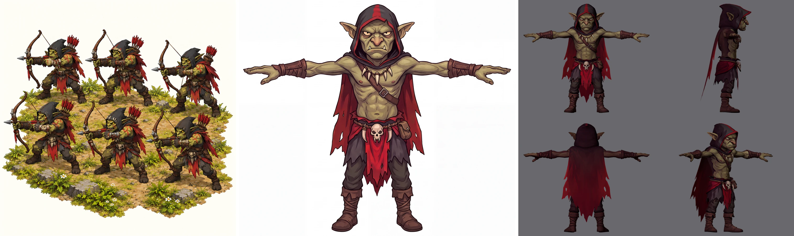
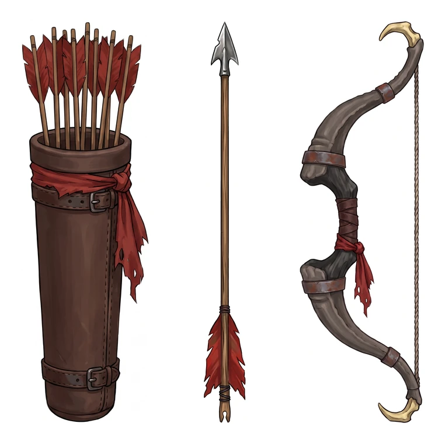
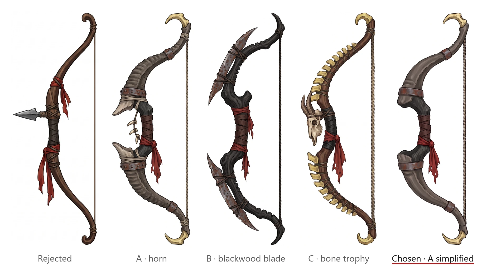
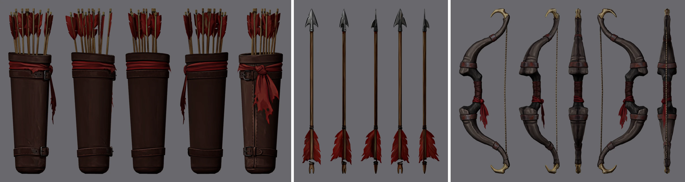
| Model | Image | Polycount set | Faces / vertices | Length in Blender | Export |
|---|---|---|---|---|---|
| Body | archer_tpose_front_v2.png | 5,000 | 5,720 / 5,532 | 1.486 m tall | body__take-01.zip |
| Quiver | quiver_front.png | 1,500 | 1,767 / 1,582 | 0.62 m | quiver__take-01.zip |
| Arrow | arrow_side.png | 500 | 624 / 556 | 0.62 m | arrow__take-01.zip |
| Bow | bow_horn_simple_side.png | 1,000 | 1,311 / 1,085 | 1.10 m | bow__take-01.zip |
Standard pose
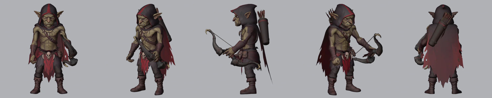
Grips
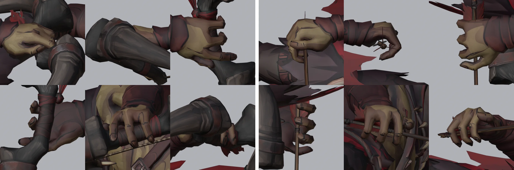
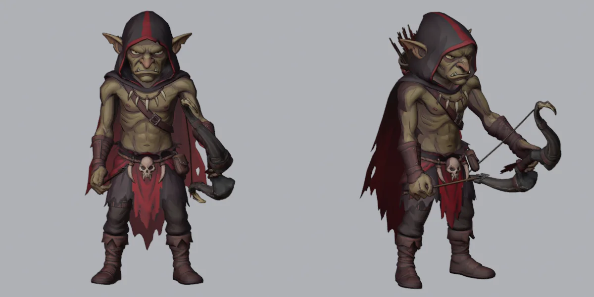
arrow property shows the arrow in the right hand. The clips key it: only the shot shows it, from the frame he brings it up to the frame he looses.Quiver
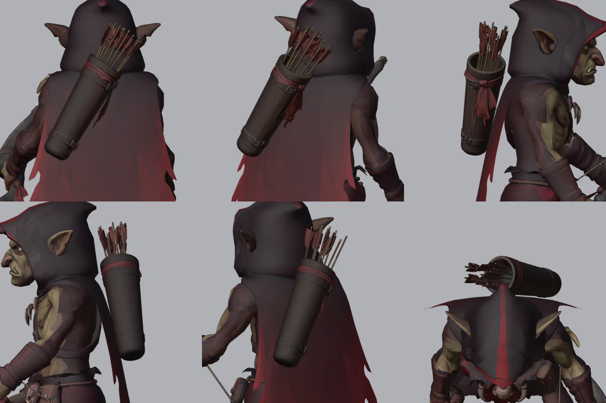
Walk and run
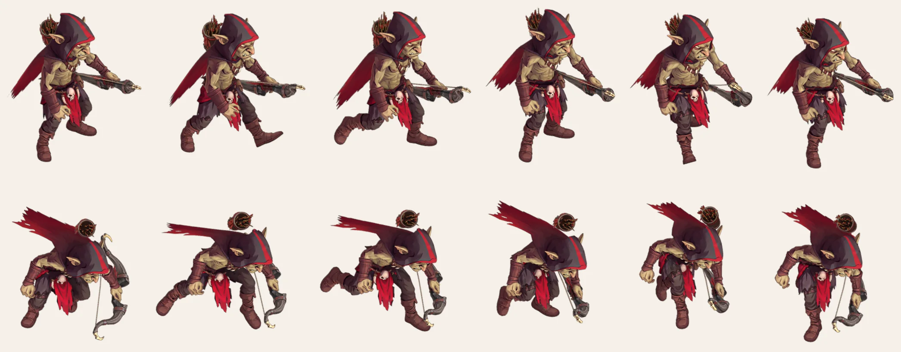
The shot
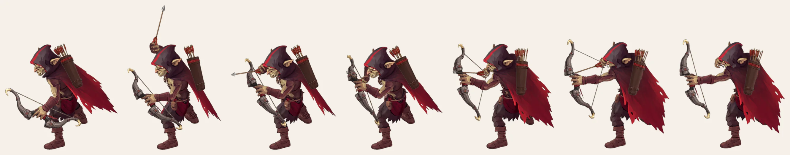
Block
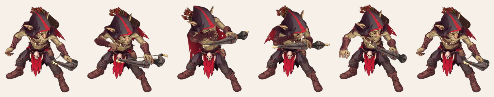
Death
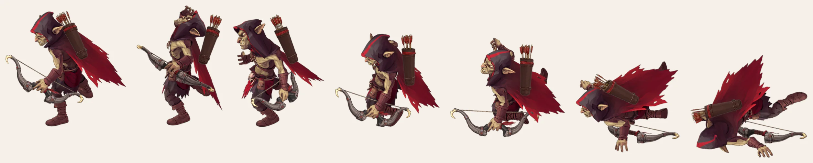
In the sandbox
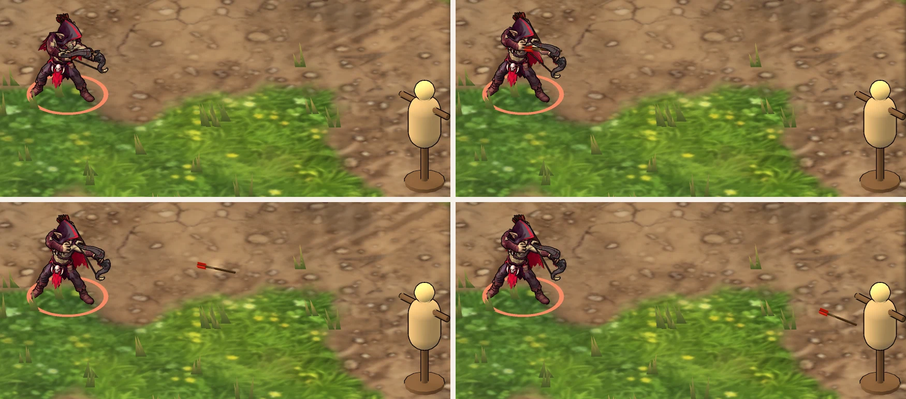
shot_from in the sidecar), and flies on a gentle arc at 30 m/s. In the sandbox he walks into range (10 m) and a clear line before he shoots. Struck, he plays the block; killed, he drops the bow.Notes
- Holding the bow in motion. The idle, walk, run and death were made for empty hands. In every frame his left hand keeps its standard turn on the bow, and the arm gets the smallest correction that keeps the bow out of his body and off the ground: eased toward the standard pose, then lifted out from the chest. The idle and the walk lift it 10°, the run up to 50° and the death up to 30°. The attack and the block are the archer's own clips, so there the wrist turns as the clip says; the block's arm is eased 40% toward the standard pose, the attack's not at all. Each correction is spread over its neighbouring frames, so it never pops.
- The shot. The arrow comes into the fist at the frame the fist is highest. Of the ways tried, pointing up over his shoulder is the first that keeps it out of him until it is nocked. Pointing back into the quiver's opening put it through his head. The fist then comes onto the arrow's level over three frames, so the arrow stays level from the string to the rest. The rest is 10.6 cm up the bow beside the handle, as low as clears the bow hand at any draw. At full draw the nock is 0.517 m from the rest, the string drawn 0.368 m, and the arrow points 5.6° above level. To keep the fist, the arrow and the string out of his head and hood, the fist moves out to his right along that level, up to 16 cm, with the elbow kept in the clip's plane.
- Clearance. Every frame was checked for body triangles that cut through the bow (with its drawn string), the quiver, the arrow while it shows, and the cape below the quiver: none, in all 201 frames of the idle, 36 of the walk, 27 of the run, 40 of the shot, 61 of the block and 72 of the death. The bow hand and the fingers on the arrow and the string are left out of the count. The quiver stays at least 6 mm off his body.
- On the ground. In the death his hips are lifted wherever his body or a prop would go below the ground, by up to 26 cm, widened and averaged so the lift never pops. In the walk, the run, the shot and the block the hips rise or drop so the lowest point of his soles stays at its rest height. The shot and the block come down 1.5 to 3.6 cm, because his legs are shorter than the clip's and they floated.
- Loop and drift. The idle stays in place and eases its last 10 frames back into the first. The walk and the run are kept in place and loop seamlessly. The walk covers 1.18 m a stride (1.01 m/s), the run 2.07 m a cycle (2.39 m/s), which the game adds as he moves. The shot, the block and the death play as they come.
- Clips used. Idle - Goblin, 201 frames (6.67 s). Walk - Goblin, 36 frames (1.17 s). Running - Goblin Archer, 27 frames (0.87 s). Attack - Goblin Archer, 32 frames plus 8 held (1.30 s). Hit - Goblin archer, 61 frames (2.00 s), used as the block. Death - Goblin, 72 frames (2.37 s). All are from
projects/meridius/Animationsat 30 fps, with the hips' motion scaled by his hip height against the clips' (0.657). Attack - Goblin Rabble is a melee swing, so it is not used. The Mixamo clips stay local, so the retargeted motion is saved in a separate local copy of the rig, not in the rig file. - Frames. Rendered in Blender's Workbench, flat-lit with an outline and cavity, from an orthographic camera 30° above the ground, at 254.5 px per metre in a 780 × 680 frame (taller than the rabble's for the raised bow), then packed at 0.75 scale.
- Limits. The thumb closes against the bow's grip but doesn't fold over the index finger as in a real fist. The arrow appears in his fist above his shoulder: the clip's hand never reaches the quiver's opening, so the arrow isn't shown leaving it. The string runs to the middle of the fist; no finger hooks it on its own. In the run his soles dip up to 1.6 cm below the ground in some frames. The sandbox has no use for the run yet; it is in his clip list.
- Files.
projects/meridius/references/characters/blender/goblin_archer/goblin_archer_rig.blend(rig, props and grips) andgoblin_archer_base.blend, built bybuild_archer.pyandrig_goblin_archer.pyin itstools/, withrender_rig.pyfor the review renders and measurements. The clips are retargeted byretarget_clips.py, rendered byrender_clips.pyand packed bypack_sheets.py, and exported for Godot byexport_godot.py(checked bycheck_export.py) tosource/godot/prototypes/goblin_archer_anim/art3d/goblin_archer.glbwith its sidecargoblin_archer.json; the GLB stays local. ItsREADME.mdhas the commands. The Tripo exports are inreferences/characters/tripo/goblin_archer/, the images and prompts inreferences/characters/goblin_archer/.